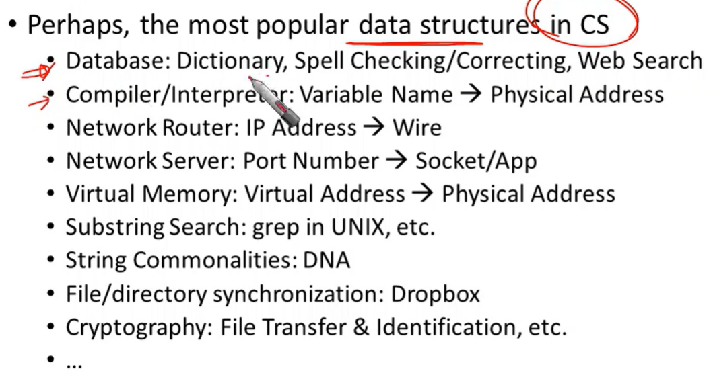

Algorithms Week 6
Hashing (Randomized algorithms)
direct-address tables, hash tables, hash functions
Data structures

Hashing basics
Hash tables are another sort of data structure that allows fast INSERT/DELETE/SEARCH.
Hash families are the magic behind hash tables.
Universal hash families are even more magic.
Hash tables
- \(O(1)\) expected time INSERT/DELETE/SEARCH
- Worst worst-case performance, but often great in practice.
Applications of dictionary

Direct addressing
assumptions
- no duplications (중복이 없음)
Terminology
But we don’t know which ones will show up in advance.
Hash tables with open addressing
Worst-case analysis
Solution: Randoness
A simple deterministic hash function
mod: 나머지 연산
n은 소수
A universal hash family
Summary
Tree algorithms
Tree basics, Binary search tree, red-black tree
Some data structure for storing objects

Motivation for binary search tree
Recall the data structure
connected: 어떤 node에서 출발해도 그 어떤 node에 도달 할 수 있다.
acyclic: 자기 자신으로 돌아오는 cycle이 없다.
forest: tree의 집합
Binary tree terminology
child를 최대 2개까지 가질 수 있음
Binary search tree
node 선택 -> node의 key 값에 따라 좌우 분류 -> 분류된 집합에서 node 선택 -> 좌우에 붙이고 반복 (recursion)

이 binary search tree는 unique하지는 않다.
Search in a binary search tree
Insert in a binary search tree
x.key == key의 경우엔 binary search tree내의 값들이 다 unique하다고 가정했기 때문에 그냥 넘어가는데, 구현의 문제로 남겨짐.
Delete in a binary search tree
이 case에서는 그냥 2를 없애고 2의 자리에 1을 붙여주면 되지만…
case 1
if 3 is a leaf -> just delete it
case 2
if 3 has just one child
case 3
if 3 has two children, replace 3 with it’s immediate successor, aka next smallest thing after 3
3의 right child 중에서 가장 left에 있는 descendant를 불러와서 3의 자리에 옮김
- Does this maintain the BST property? yes
- How do we find the immediate successor? SEARCH for 3 in the subtree under 3.right
- How do we remove it when we find it? if 3.1 has 0 or 1 children, do one of the previous cases.
- What if [3.1] has two children? It doesn’t. 3.right의 subtree 중에 가장 좌측에 있는 node이기 때문에 자신보다 작은 left child가 존재할 수 없음. 즉, 2개의 children을 가질 가능성이 없음
How long do these operations take?
Homework
P2 (5점): K번째로 많은 원소 찾기
개요 및 요구사항
- 주어진 길이 n의 정수 배열에서, K번째로 많이 등장한 원소를 반환하는 알고리즘을 작성하세요.
입출력예
(입력1) 10 5 1 1 2 2 3 3 4 4 4 5
(출력1) 5
4 - 3개
1 - 2개
2 - 2개
3 - 2개
5 - 1개
5번째로 많은 수 == 5(입력2) 10 2 1 1 2 2 3 3 4 4 4 5
(출력2) 1
4 - 3개
1 - 2개
2 - 2개
3 - 2개
5 - 1개
2번째로 많은 수 == 1 or 2 or 3- 첫째줄에, 배열의 길이 len이 입력됩니다.
- 둘째줄에, K가 입력됩니다.
- 셋째줄에, 배열의 원소들이 입력됩니다.
- 제공한 sample1.txt 파일과, main.cpp 파일을 참고하세요.
상세조건
- 0 < len <= 10,000
- 0 < K <= the number of unique elements in arr
- 0 < each element <= 10,000
- 정답이 다수인 경우, 그 중 하나만 출력해도 정답으로 인정 (위 입력2의 경우 1,2,3 모두 정답으로 인정함)
- 자동화된 채점 시스템을 활용할 계획이므로 제공한 템플릿을 활용하되, 기본 제공한 함수 프로토타입 등은 변경하지 말 것.
- 구현은 모두 solution.cpp 파일에 하고, 제출도 solution.cpp 파일만 제출.
- (main.cpp/ solution.h 파일은 테스트 용으로만 활용)
- 시간제한: 3sec @ 3.0Ghz single core
- 공간제한: 없음
- 체점환경은 c++17 문법을 사용함.
제출
- 소스코드 (solution.cpp) 와 보고서 (학번.txt)를 압축 (학번.zip)하여 제출
- main.cpp, soultion.h, sample1.txt 등 기타 파일들은 포함하지 말 것.
배점
4.5점Correctness & Efficiency- 총 9개의 테스트 케이스에서 항상 정답을 찾아내는지 여부와 시간 제한을 만족하는지 여부를 검증.
- 각 테스트케이스를 여러번 실행하여 항상 일관된 정답을 출력하는지 여부를 검증하고, 실행 시간은 평균값을 취하여 검증함.
주의C/C++ 에서 기본제공하는 sorting/selection 라이브러리 사용시 40% 감점 (e.g., nth_element(), sort() 등)
0.5점보고서- 위 문제 해결을 위한 본인의 알고리즘 설계 방법 제시 (소스코드 설명하지 않아도 됨).
- 본인이 설계한 알고리즘의 correctness & efficiency 의견 제시.
Solution
#include <stdio.h>
#include <stdlib.h>
#include "p2_solution.h"
void merge(std::vector<int> &arr, int l, int m, int r) {
int i, j, k;
int n1 = m - l + 1;
int n2 = r - m;
std::vector<int> L(n1, 0), R(n2, 0);
i = 0;
for (i; i < n1; ++i) L[i] = arr[l + i];
j = 0;
for (j; j < n2; ++j) R[j] = arr[m + 1 + j];
i = 0;
j = 0;
k = 1;
while (i < n1 && j < n2) {
if (L[i] <= R[j]) {
arr[k] = L[i];
++i;
}
else {
arr[k] = R[j];
++j;
}
++k;
}
while (i < n1) {
arr[k] = L[i];
++i;
++k;
}
while (j < n2) {
arr[k] = R[i];
++i;
++k;
}
}
void mergeSort(std::vector<int> &arr, int l, int r) {
if (l < r) {
int m = (l + r) / 2;
mergeSort(arr, l, m);
mergeSort(arr, m + 1, r);
merge(arr, l, m, r);
}
}
int Solution::kMost(std::vector<int> &arr, int len, int k)
{
int i;
std::vector<int> count_arr(len, 0);
i = 0;
for (i; i < len; ++i) {
int n = arr[i];
count_arr[n] += 1;
}
std::vector<int> rank_arr(k, 0);
std::vector<int> index_arr(k, 0);
i = 1;
for (i; i < len; ++i) {
int res = count_arr[i];
if (res > 0) {
int j = 0;
for (j; j < k; ++j) {
if (rank_arr[j] <= res) {
int n = k - 1;
for (n; n > j; --n) {
rank_arr[n] = rank_arr[n - 1];
index_arr[n] = index_arr[n - 1];
}
rank_arr[j] = res;
index_arr[j] = i;
break;
}
}
}
}
return index_arr[k - 1];
}